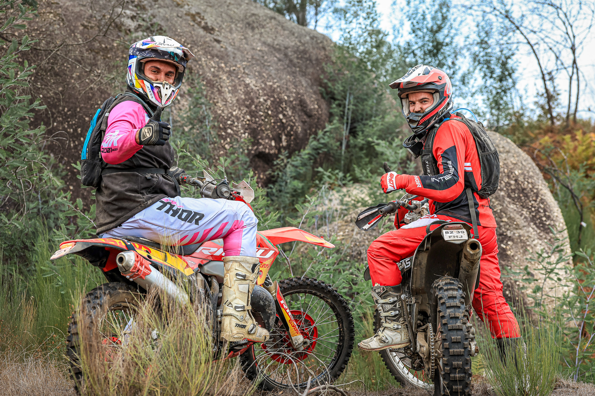
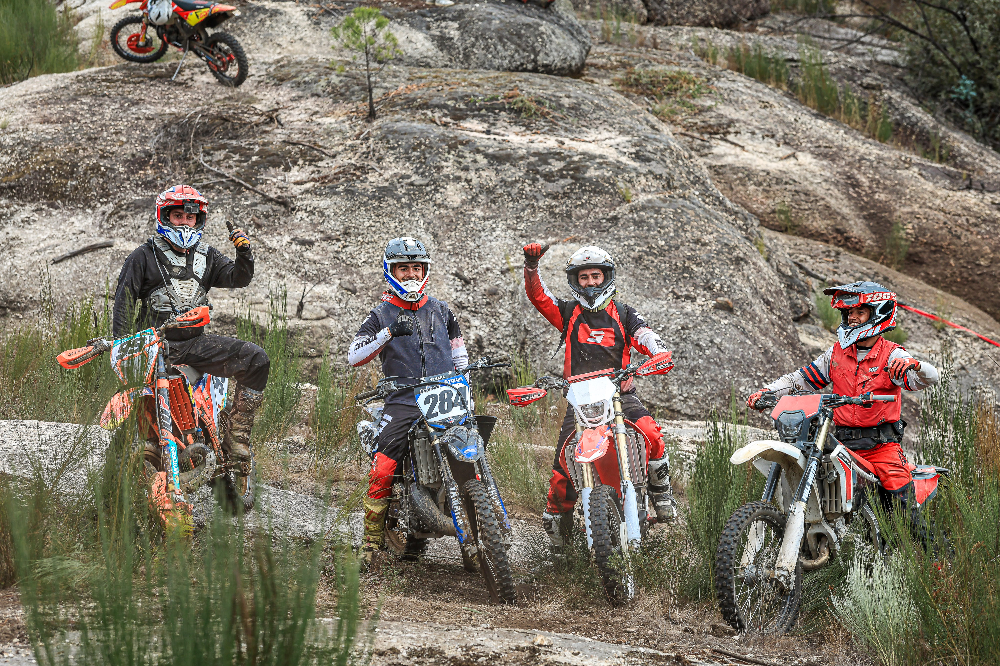

The X Passeio TT brought off-road riders to Carregal do Sal on 25 October 2026 for the tenth edition of a day built around motorcycles, quads and the trails of the municipality.
Organised by the Bombeiros Voluntários de Carregal do Sal, the programme began at 07:00 and combined the trail route with breakfast, lunch, insurance and support along the way.
A route shaped by rocky terrain and companionship
Adilia Pinto's photographs show riders stopping among granite outcrops, greeting the camera and sharing the landscape. The images place the social character of the ride beside the physical demands of its off-road setting.


Image Media on the route
The coverage follows the event through its quieter pauses as well as the trail itself, documenting the people, machines and shared gestures that defined the day in Carregal do Sal.
Image Media's coverage team for the event was Adilia Pinto and Claudio João. All three photographs in this report are by Adilia Pinto.
Image Media coverage
Reporting: IM News Editorial Desk
Coverage photographers: Adilia Pinto and Claudio João / Image Media
Event date, location, organiser and programme checked against the official event listing.